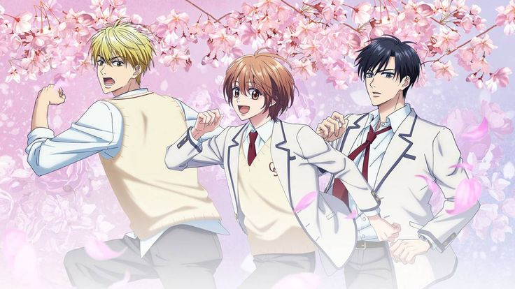

Trailer :
Genres :
- Comédie romantique
- Shōjo
- Slice of Life
- Gender Bender (Travestissement)
- Sport (Athlétisme)
Synopsis :
Mizuki Ashiya, une lycéenne japonaise-américaine, tombe amoureuse d'Izumi Sano, un ancien prodige du saut en hauteur.
Pour se rapprocher de lui, elle prend une décision radicale : se travestir en garçon afin d'intégrer le lycée privé exclusivement masculin où il étudie.
Devenue son colocataire, Mizuki doit maintenir son secret à tout prix dans cet environnement chaotique, tout en tentant de redonner à Sano sa passion pour le sport, le tout au milieu de quiproquos hilarants et d'une rivalité amoureuse inattendue.
Personnages :
Mizuki Ashiya
Mizuki Ashiya Héroïne optimiste et déterminée, elle quitte les États-Unis pour s'inscrire clandestinement dans un lycée de garçons au Japon.
Son courage est mis à l'épreuve quotidiennement alors qu'elle doit cacher sa véritable identité tout en gérant ses sentiments grandissants pour son idole.
Son énergie contagieuse et sa bienveillance finiront par bouleverser la vie de tous les élèves de sa chambre.
Izumi Sano
Izumi Sano Ancien champion de saut en hauteur ayant perdu sa motivation, c'est un garçon mystérieux et réservé qui devient le colocataire de Mizuki.
Bien qu'il semble froid au premier abord, il possède un grand cœur et développe une relation unique avec Mizuki, dont il finira par découvrir le secret sans pour autant la dénoncer.
Son arc narratif central tourne autour de sa reconquête de la confiance en lui grâce au sport.
Shuichi Nakatsu
Shuichi Nakatsu Élève énergique et footballeur talentueux, il tombe sincèrement amoureux de Mizuki en croyant fermement qu'elle est un garçon.
Cette confusion le plonge dans un trouble comique sur ses propres sentiments, car il ignore totalement la véritable identité de celle qu'il aime.
Sa loyauté et sa jalousie envers Sano animent une grande partie des dynamiques amicales du groupe.
Minami Umeda
Minami Umeda Infirmier scolaire cynique et homosexuel assumé, il est le premier à découvrir le secret de Mizuki mais le garde précieusement.
Bien que faussement méchant et taquin avec elle en privé, il agit toujours comme un allié discret pour protéger son identité et la guider sans jamais l'humilier publiquement.
Son attitude détachée cache une bienveillance réelle envers les élèves du dortoir 2.
Julia Maxwell
Julia Maxwell Meilleure amie de Mizuki venue spécialement des États-Unis, elle est la seule personne extérieure à l'école à connaître son secret dès le début.
Son rôle principal est de tester les sentiments de Sano et de pousser activement Mizuki à se rapprocher de lui par tous les moyens.
Son caractère direct et protecteur crée souvent des étincelles avec Nakatsu, qu'elle surnomme affectueusement "Monkey Boy".
Anime :
Saison 1 :
12 épisodes
Saison 2 :
En cours
Countdown :
Manga :
Nombre total de tomes : 23
Statut : Terminé
Auteur : Hisaya Nakajo
Note :
5/10
Commentaire :
Mouais...Cool si on est vraiment sous ennuie mortel. Oubliable, animation pas dingue, un shojo de plus qui est surement plus appréciable en manga qu'en anime.